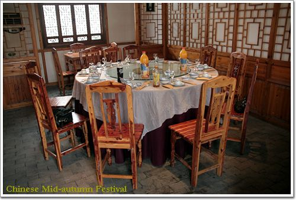
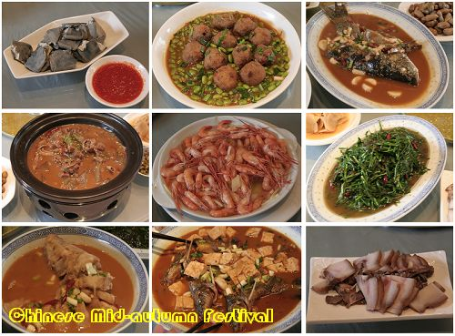
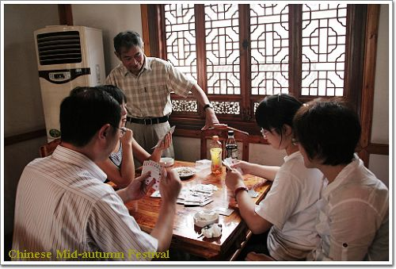
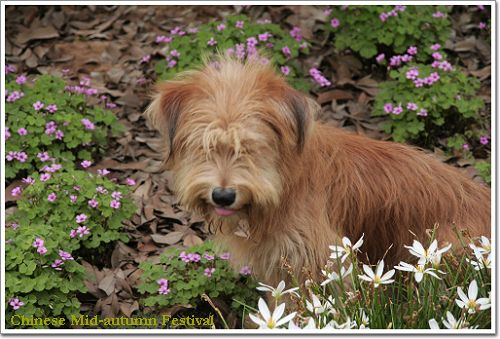
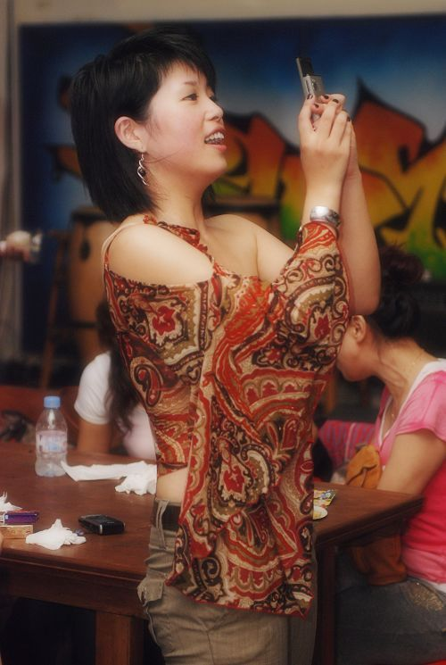
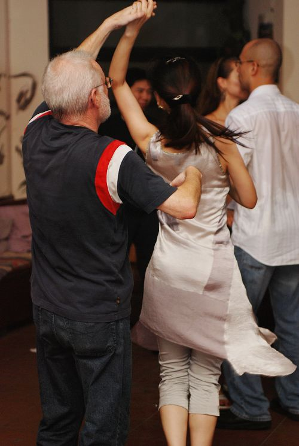
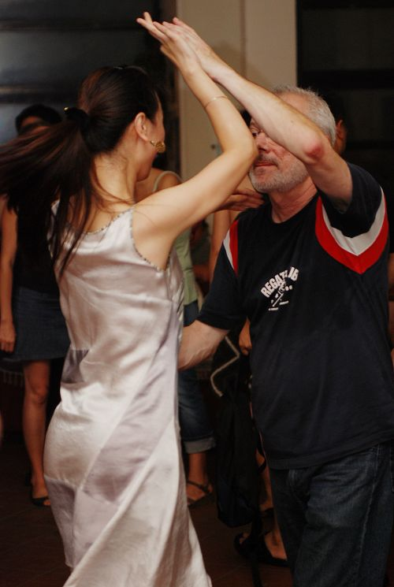
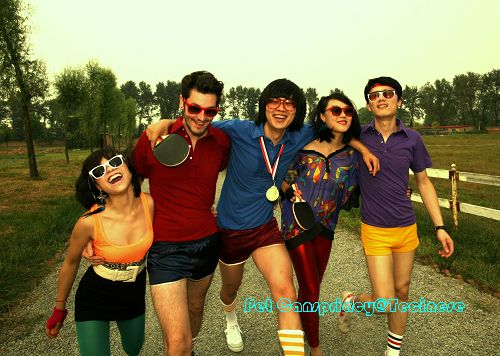
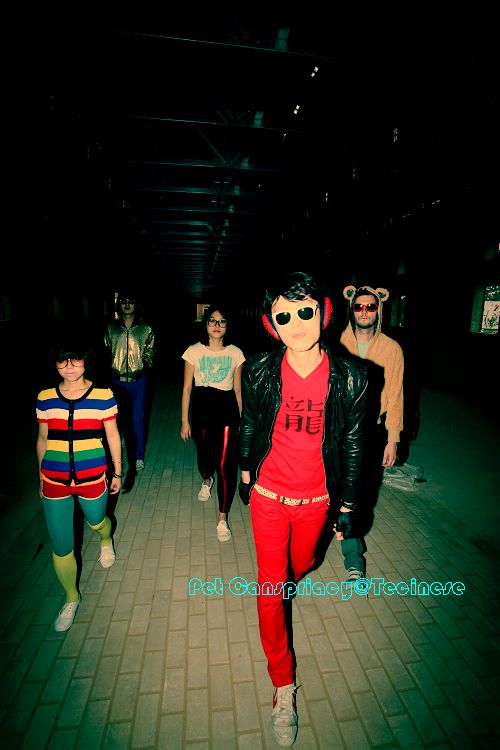
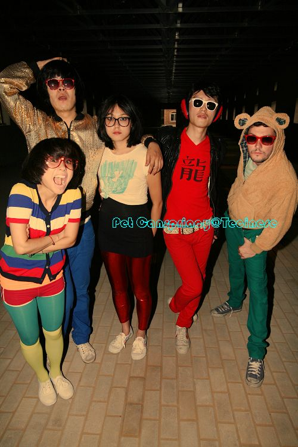

Archives : 2008-09
*blue* @ Sep 28, 2008
后面是salsa老师媚惑着要去北京的指甲。

刚买的指甲油，俺很喜欢！

来自“石康” @ Sep 28, 2008
**“找一个有意思的人挺重要的。这个人本身要有意思，不能是那种买了各种装备为了做给别人看的人。他得先能够自己呆着，确保一个人的日子也还有点色彩，那么和他生活在一起的人就不会乏味。白头到老倒是没有什么值得挖苦讽刺的，但是苦挣着的，彼此需要适应的所谓磨合过后的婚姻即使长久倒也是值得同情的。要我说合适的婚姻根本不需要磨合，有什么好磨合的？互相改变？凭什么呀？娘胎里带出来的习惯秉性哪里那么好改，合适就在一起，不合适就别往一块凑。你呀，还是命不好，好女孩子还是有的，命里面多一个人也未必一定是个累赘，不过你得耐心地慢慢等。爱情确实是没办法天长地久的，可是谁又说白头到老就非得靠爱情才能做到呢？那个可不是爱情，爱情的感觉是痛苦的，没有人愿意一辈子痛苦，所以一旦经历过了以后，大家就喜欢轻松乐观的生活了，给自己少找点麻烦。婚姻就不应该让人动太多脑子，两个人成天坐一块探讨宇宙之雄伟，生命之可贵那才傻呢。省出精力去做婚姻之外有意思的事情才是真格的，写小说的好好写小说，当经理的好好当经理，回家吃饭聊聊天，然后洗脚睡觉。” －兰心 留言
**独立的基础，便是经济独立，量入为出，这是人们应最先获得的基本能力，否则说什么都是空谈。离开经济独立谈平等与自由，谈个人意识与趣味，谈恋爱谈感情，都是胡扯，因无人为此买单。
纪德说过，那些总是接受别人恩惠的人，他们的报恩感要比施与者差得多。
索取者一般会谈很多事情，却极少谈回报，因他们根本就没打算回报。他们有时简直把求助当成了一种私人权利。我们要学会拒绝他们，我们必须承认，我们的无私与好心是有条件的。
**诚实的能力，世上再也没有比诚实更可使我们自我感觉良好的了，因我们承担了对自己最具挑战性的责任，我们的快乐是真实的。
在生活中，我发现那些总是不幸的人，那些抑郁的人，那些痛苦的人，他们第一个特点就是说话不算数，这一发现曾令我非常吃惊，我知道有些人因被欺骗而痛苦，但他们只要找到与他们相关的善意人群，他们的痛苦便会消失不见，而那些总是撒谎的人却总是痛苦的，我甚至无法理解他们的痛苦，因他们说的话虚虚实实......
谎言令人丧失个人信誉，其代价看起来很小，甚至可以解决一些表面看起来很迫切的问题，但即使从势利的角度评估，丧失信誉会因失去未来潜在的巨大机会而非常不划算——承当责任，最勇敢最顽强地承当，是通往快乐与幸福的捷径，其余的全是东躲西藏的黑暗与痛苦，那是无法摆脱的懦弱、自怜与失望，当我们对自己失望之后，谎言把那失望投射到别人身上，这是人们无法很好地相处、无法愉快的根源。
左眼。跳。。。 @ Sep 27, 2008
**快一周了，左眼皮经常跳，baidu的解释居然是“有可能一年后面瘫。。。”
归归，如果真面瘫的话，生活也算有点新意了。
**昨晚参加80年后的婚礼，又看了一出小舞台剧，这歌功颂德不知道折腾的是谁？怕了这样的场景，活受罪，谁结婚都别喊我，省得皮肤上一阵寒一阵热的。什么时候中国的婚礼能让人感觉到享受而不是折磨呢？有人说：“婚礼就是告诉大家某某结婚了。”你不告诉大家你结婚了，相信大家也会知道，中国人拥有如此强烈的好奇心，舌头又长，不怕不怕。
**有一老外说：“我们也关心朋友，但是不会象中国人那样‘过份’关心朋友。”几乎所有的中国人见了他都问：“你GF怎么没来？”就是没来关你鸟事？！你瞎掺和什么？按照这样的逻辑，那些喜爱咀嚼他人隐私，然后将咀嚼物吐到另一个感兴趣的人口中继续咀嚼。。。大家都特不讲究个人卫生？不过，想来也是关心的一种，至少，你被关注被在意，不是吗？
**中午南京的天空又是蓝色的了，我朋友说天本来就是蓝的，可以前看到的天空是灰的。这段时间南京在评文明城市，基本上每个路口都站着交警和头戴小红帽的人，每每开车路过感觉挺隆重。渣土车的车牌也醒目不少，几乎都用油漆放大描在车的尾部。因为全国评选文明城市，南京还下了好些官员，这些被免职的官员是不是政府就不安排工作了呢？
**明天最后一天工作日，我从来没有象现在这样爱上班，盲目乐观而已，呵呵~
**salsa班上有几个同学准备国庆节杀到北京去参加salsa大聚会，上海去50多个人哦，壮观！南京啤酒节那天晚上因为下雨本来的表演取消，大家转到宝莱纳，我见到了传说中的黄飞鸿，一个菲律宾男人，乐队主唱。头上扎头巾，整个儿海盗形象，却温柔似水，跳的salsa属奔放型，我喜欢。和老师还有一个女同学跳了好几支舞，看得我眼珠子要掉下来了，哇，salsa原来可以这么跳。场内消费客也几乎被舞蹈吸引，聚精会神，面带微笑地观看，salsa的热情就是这么有感染力！我要加油啊~
保重 @ Sep 26, 2008
有的人通过网络，恋爱；
有的人通过网络，欺骗；
有的人通过网络，做生意；
有的人通过网络，看他人的生活；
有的人通过网络，建立友谊.....
见到文心，就会想到6e，遗憾的是只有文心。
第四次见到文心，在我们认识6年中。
6e则忽然消失了，没有声音和图像，那个带着我的翅膀的blog也空空一片。
文心成熟了许多，胖了。
我，衰老的迹象爬上额头。
我们坐在车里做着告别前的交谈，外面淅淅沥沥的下着小雨。南京的秋天就这么来到了，却丝毫没有减少那份熟悉和亲切。通过网络相识，当他们还在美国时。2002年写中文blog的人屈指可数，现在仍然坚持地却少之又少。blog建立起来的友谊就是这么奇妙，相识相知多年，却极少见面，见面时仍有亲人的感觉，想想有几个这样的朋友呢？交谈的时间一分一秒地摆动，这些年也就在分秒间象放电影似的展现在脑海中。
大家活得都不容易，无论是ceo还是小职员......
比起余华作品《活着》里的那些人物，我们尚算幸运的。
珍惜生活的每一天，彼此保重，一切尽在不言中。
2004年方兴东到美国开会，邂逅博客动力网站CEO卢亮，两大博客一见如故，剪烛共话BLOG发展前景，彼此惺惺相惜，引为知音，遂为今后的购并埋下重要伏笔。并购后，由IT产业著名研究专家和业界资深人士王俊秀先生出任博客中国总裁，卢亮先生出任博客中国副总裁，文心出任博客中国北美市场总监。卢亮是美国Texas A&M University博士，中国科学院高能物理研究所(硕士)，曾任职欧洲粒子中心。一手创立了博客动力和美国微分科技有限公司，并担任首席构架师。文心，博客动力创始人之一，美国微分科技的创始人。毕业于美国德州大学Austin 分校，文心负责发展北美的业务和海外融资。
狗年龄的计算方式 @ Sep 25, 2008
网络上下载了关于训练狗狗的片子，共6集。
其中说到狗年龄的计算方式：
狗狗第一年＝人的15年；
狗狗第二年＝人的10年；
之后狗狗的每一年＝人的3年。
以后别人再问我luke多大了，我就回答：“25岁啦！”
ZT：中国人彪悍的一天 @ Sep 23, 2008
早上醒来，先用二甘醇超标的田七牙膏刷牙，再用发臭的蓝藻水洗脸，给儿子冲一瓶碘超标的雀巢奶粉，自己喝杯三鹿三聚氰胺奶粉，吃几个硫磺熏白了的馒头，夹点废旧油漆桶里腌的榨菜，包里放个安徽人05年的粽子（上班饿了吃），吃饱喝足，出门，深吸一口富含PX的空气，到断成两截的九江大桥上溜溜腿儿，找找白娘子和许相公在断桥的感觉。
中午跟同事一起到肯德基吃顿苏丹红炸鸡，喝了杯苯超标的可乐。下午给朋友打电话，就听见她哭哭啼啼，大约是炒股炒赔地，约她出来到新开的菜馆吃顿地沟油炒的菜，来一盘避孕药催大的香辣鳝鱼，再来一盘臭水沟捞来的麻辣龙虾，还有个农药高残留的清炒菠菜，老板上一杯重金属超标100倍的碧螺春茶，再喝点含甲醛的啤酒……，算帐的时候168(太黑了，还不打折）吉利，老板又找回了一张假币。
回家的时候被宝马撞倒，太幸运！得让丫出点血，所以躺着不动，一睁眼，看宝马调回头来碾压……以史无前例的速度爬起来跑掉。
回家。要睡觉的时候，被刚装修完的赠品甲醛呛得眼泪直流，只好把脑袋蒙到黑心棉被子里。想起房子还有四十万贷款加利息，辗转反侧到天半亮都没眯。找安眠药吃了半瓶也没用，含在嘴里，哦，是糯米粉。
刚起床就听见警笛，开门看4辆河北唐山老大的军车呼啸而去，好家伙，心里那个美啊！（幸好不是来找我！），突然电话响起，接吧，那头说："二蛋，赶快去，我电视上看见你表弟了，我以为是非洲人呢，结果一看是在山西的黑砖窑里……"
生活，就是这样被上帝平衡着。 @ Sep 22, 2008
老哥国庆节过来，整个假期都在南京。
还要继续忙。。。真是奇了怪了。。。
下半年不知什么时候才能悠闲悠闲？
上周连续到上海两次。
前一次观摩展会，后一次参加“2008上海国际salsa节。”
每次去“物欲横流”的感觉很强烈。
上海有我需要的东西，还有灿烂的友情。
可是，我还是喜欢生活中的南京。
如果能和好朋友生活工作在同一个城市，该是多么幸福~
你必须取舍。
生活，就是这样被上帝平衡着。
上帝永远不会将所有的美好都装进同一个人的口袋。
3鹿事件感悟 @ Sep 18, 2008
3鹿事件和先前国外进口中国产的狗粮一样把咱们中国人的脸都丢尽了。
不过是3鹿先捅破奶业内一大脓包罢了。中国的山寨产品啊~~摧毁整个民族的山寨产品！官方的解释说是奶农和奶牛的问题，天杀这些无良的奸商，小孩子的生命都当儿戏！3鹿事件曝光后，男人们都要找波大的女人做老婆，奶源充足，不用担心被毒奶牛和毒奶农毒害！可大夫讲这流量的大小似乎和尺寸没有必然联系。我现在担心的是狗粮，别把咱luke吃成个肾结石啥滴！

铁人三项 @ Sep 18, 2008
昨天俺早晨5点20起床，6点20出发去火车站，出差的当天赶回南京上salsa课，感觉这一天过得跟"铁人三项"似滴，马不停蹄....累到晚上贴了面膜居然睡着了，早晨醒来面膜在枕头上，这一晚一个梦都没做（其实是睡的太沉，忘记了。），睡得那个香呀~
这一周学salsa很“努力”，活动到的部位肌肉酸痛。昨天出差，几乎走了5、6小时的路，脚上磨出几个水泡，一天就中午吃得还象回事，晚上10点多钟到家只能吃麦片充饥，现在非常渴望睡一个长到中午的懒觉，吃一顿美餐，做个手佳按摩！！！夫复何求啊~
明天，俺又要奔了~
so忙的中秋假期 @ Sep 15, 2008

中秋佳节 @ Sep 14, 2008
农家小院，so....远，湖熟，听说过吧？

吃鱼为主，所以点了三份鱼；

古色古香的小院子；

家里人接受不了先前穿的粉红色连衣裙，这就换成绿色的啦~

今年夏天一张荷叶的PP都没拍，秋天补一张；

饭后，一家人打起争上游；

它在丛中笑~

回家路上拍下的月亮？太阳？

salsa的周末 @ Sep 14, 2008
星期五salsa舞学习班上的5个人集体过生日，邀请Sherry和我一起去。
开始时完全忘记课堂上学习的舞步，犹豫地挪动了几下便呆掉了。看来想要在实践中游刃有余发挥出来，真没有近路可走，必须脚踏实地的刻苦学习。自从参加了salsa舞的学习，生活中我也变化不少，变得快乐，明白妥协的意义！我在考虑是否剪掉长发？因为旋转时会打到别人的脸上。那晚不仅被别的女生的高跟鞋踩了几脚，我也踩了别人好几次，呵呵~离开party时我的衣服都被汗水浸湿了，玩得非常开心，开心得有些奢侈~
吃过亏的人，在最初交往时会自己先筑下一道厚厚的墙，可在salsa舞的集体中，自己会先推倒这堵墙，周围人真诚而热情，那么，为何要将自己围在墙的这边呢？人和人，本来就应该这样交往，不是吗？
祝大家中秋快乐！
@集体照@

*这是我们非常可爱而智慧的老师*

老师和她的学员共舞#

下面两张是我在跳舞哦~舞伴是来自法国的工程师，在南京工作三年，他所在的公司在世界各地有合作的工厂。老人的名字始终说不顺口，也写不下来，也是我们班上的学员。课堂上和他做过舞伴儿，当时没发觉他的光彩，然而周末的party却和这位老人配合的不错，更确切地说是在他的带领下我还能跳得不错。但是在一次旋转中我居然将他呈90度的眼镜脚打成了180度，他轻轻一折又回到了90度：P变魔术似的，呵呵~所以，不要以貌取人哦！


舞动瞬间~美女好多呀~
这个黑红搭配的女生学习了8个月salsa，跳得非常好了！

世界真小，体恤男生居然是Sherry的高中同学；

老师和上海来的Alan的salsa真是看得人眼花缭乱；

Sherry是不是变化很大？越来越有女人味：P
瞧，旁边居然有人拿着毛巾擦汗！

生日高潮部分，大家围成一个圈一起跳舞，而我在边上象高手学习salsa；

这个女生也是我们班上的高材生。

bleeding me @ Sep 08, 2008

i'm diggin' my way
i'm diggin' my way to somethin'
i'm diggin' my way to somethin' better
i'm pushin' to stay
i'm pushin' to stay with something
i'm pushin' to stay with something better
i'm sowing the seeds
i'm sowing the seeds i've taken
i'm sowing the seeds i take for granted
this thorn in my side
this thorn in my side is from the tree
this thorn in my side is from the tree i've planted
it tears me and i bleed
and i bleed
caught under wheels roll
i take the leech
i'm bleeding me
can't stop to save my soul
i take the leash that's leading me
i'm bleeding me
i can't take it
caught under wheels roll
oh, the bleeding of me
of me
the bleeding of me
caught under wheels roll
i take the leech
i'm bleeding me
can't stop to save my soul
i take the leash that's leading me
i'm bleeding me
i can't take it
caught under wheels roll
oh, the bleeding of me
oh, the bleeding of me
i am the beast that bleeds the feast
i am the blood
i am release
come make me pure
bleed me a cure
i'm caught, i'm caught, i'm caught under
caught under wheels roll
i take that leech
i'm bleeding me
can't stop to save my soul
i take the leash that's leading me
i'm bleeding me
i can't take it
i can't take it
i can't take it
oh, the bleeding of me
i'm diggin' my way
i'm diggin' my way to somethin'
i'm diggin' my way to something better
i'm pushin' to stay
i'm pushin' to stay with somethin'
i'm pushin' to stay with something better
with something better
Pet Canspriacy@Te cinese @ Sep 08, 2008
《宠物同谋》乐队几张新照片，后两张过于生活化，我自行处理了一下。
表情夸张，衣着鲜丽，《宠物同谋》乐队的新形象？
无论如何，让人欢喜的那股张力是我们这些坐班族所向往的！
虎子，能不能瘦一下你那张胖脸蛋，否则太缺乏想象力了~呵呵~




生活是极不愉快的玩笑。 @ Sep 07, 2008
买衣服的时候有多快乐，整理起来就有多痛苦。
每一种生活都各有利弊得失。
...... ......


星期五惊喜地发现...南京的天空竟然是蓝色的！


生理上到了用眼霜的年纪，心理却还惆怅在青春期？
即使明天80岁，我还是要种我心中的苹果树。

把脸面对阳光，你将见不到阴影。
快乐是勇敢的一种形式，Luke，不要因为我要去上班了而不快乐。

孤独还能教它们怀念什么？ @ Sep 05, 2008
在街市上我见过两只狗，隔着熙攘的人群，远远地它们已经互相发现，互相呼唤，眉目传情。待主人手上的绳索一松，它们就一个从东一个从西，钻过千百条人腿奔到一起，那样子就象电影中久别的情人一朝重逢，或历尽劫波的夫妻终于团聚。它们亲亲密密地偎依，耳鬓厮磨，窃窃地说些狗话。然后时候到了，主人喊了，主人“重利轻别离”，它们呢，仍旧情意缠绵，觉得时间怎么忽然走得这样快？主人过来抓住绳索，拍拍它们的脑门儿，告诉它们：“你们是狗呵，要本分，要把你们的爱献给某一处三居室。”它们于是各奔东西，“孔雀东南飞”，五里一回头“，消失在人海苍茫之中，而且互相不知道地址。
我常想，这两只狗一定知道它们怀念的是什么，虽然它们说不出，抑或只因为我们听不懂。不过可以猜想：只身活在异类当中，周围全是语言难通的两足动物，孤独还能教它们怀念什么呢？只是我未及注意它们的性别，不知那是否仅仅出于性欲。
不管怎么说，给爱下定义是要惹上帝发笑的。--史铁生《病隙碎语》

上帝。撒旦。约伯 @ Sep 05, 2008
撒旦不愧是魔鬼，惯于歪曲信仰的意义。撒旦对上帝说：“约伯所以敬畏你，是因为你赐福于他，否则看他不咒骂你！”上帝想看看是不是这样，便允许撒旦夺走了约伯的儿女和财产，但约伯的信心没有动摇。撒旦又对上帝说：“单单舍弃身外之物还不能说明什么，你若伤害他的身体，看看会怎样吧！”上帝便又允许撒旦让约伯身染恶病，但信者约伯仍然没有怨言。
撒旦的逻辑正是行贿受贿的逻辑。
约伯没有让撒旦的逻辑得逞。可是，他却几乎迷失在另一种信仰的歪曲中：“约伯，你之所以遭受苦难，料必是你得罪过上帝。”这话比魔鬼还可怕，约伯开始觉得委屈，开始埋怨上帝的不公正了。
这样的埋怨我们也熟悉。好几次有人对我说过，也许是我们什么时候不留神，说了对佛不够恭敬的话，所以才病而又病，我听了也象约伯一样顿生怨愤--莫非佛也是如此偏爱恭维、心胸狭隘？还有，我说约伯的埋怨我们也熟悉，是说，背运的时候谁都可能埋怨命运的不公平，但是生活，正如上帝指给约伯看到的那样，从来就布设了凶险，不因为谁的虔敬就给谁特别的优惠。---史铁生《病隙碎语》


傍晚.时分 @ Sep 02, 2008
中秋节还没到，月饼已经上市了。
晚饭后，草草拍了几张：


绒布面包装的月饼盒，现在的设计越来越别致~

无论色彩还是口感都具有层次感。

傍晚带LUKE散步。


从后面看他奔跑的背影...有时会觉得他很孤独...

。空白。 @ Sep 02, 2008
人一旦掉进仇恨里，就是非颠倒了，女人也容易变得异常狰狞。--鱼顺顺
“病急乱投医”的女性多，活得有策略的女性也越来越多。--Chinese Tea
********************************************
此时，生活安逸。
盯着远处久了视线里会出现重影，无法看完一本文字小说，及一部几十集的连续剧。简单的生活将思维变得简单，思想不知道飘在哪儿，没有任何线索可以牵引出它的踪迹。与之形成反差的是行为上不断忙忙碌碌，没有悠闲，琐碎而冗长。总是安逸而宁静，让人无从质疑，无从思想。
回家路上听广播节目《新周刊》，好久没有听，一路上都是主持人熟悉而温婉的声音，却只记得一句“有些人躲在电影里，躲在音乐里，躲在文学中，躲在......”其它，空白着。
躲？
这些人，在躲避什么？